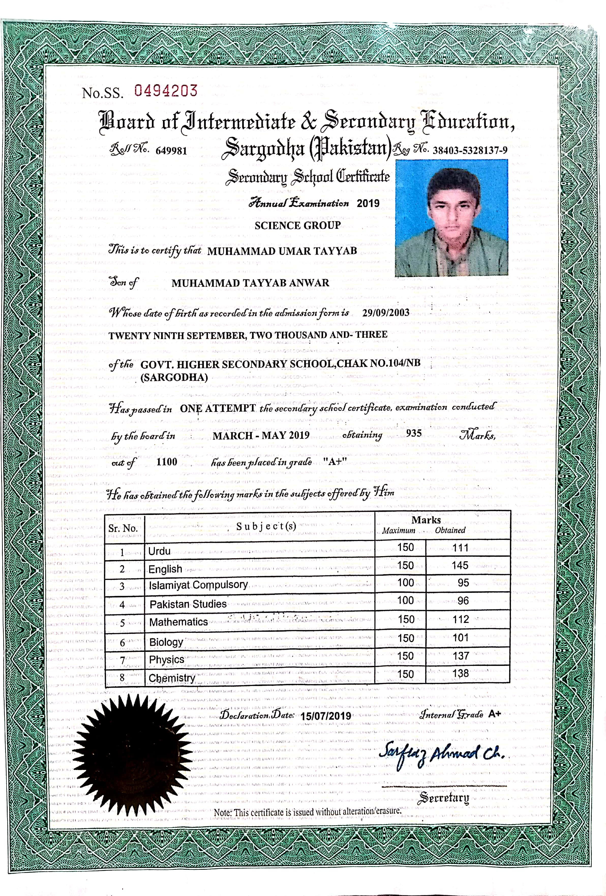
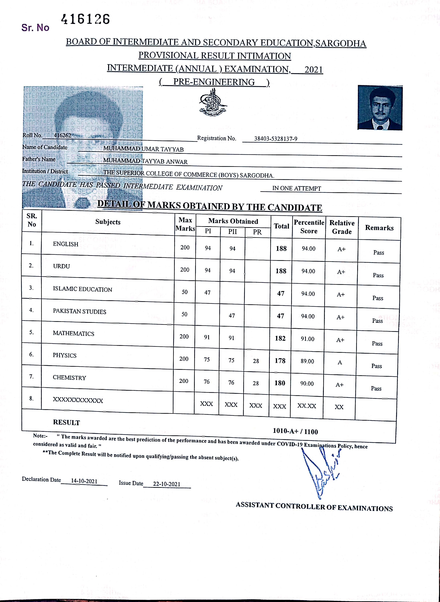

Muhammad Umar Tayyab's CV
Student's personal details
Name:Muhammad Umar Tayyab
Father's Name:Muhammad Tayyab Anwar
Section: Bs IT 1st(Regular)
Roll Number: BSIT51F21R033
CNIC Number: 38403-5328137-9
Address: Chak No.104 NB Sargodha
Date of Birth: September 29,2003
Contact Number: 0342-7440786
Email Address: umartayayb104@gmail.com
Tehsil: Sargodha
District: Sargodha
Nationality: Pakistan
Religion: Islam
Marital Status:unmarried
Student's Qualification
Matric
:
GHSS 104 NB SARGODHA

Program: Science subjects
Obatined Marks: 935
Total Marks:1100
Percentage: 85%
Session:2017-2019
Passing Year:2019
Intermediate
:
Superior College of Commerce Sargodha

Program: F.Sc Pre-Engineering
Obtained Marks:1010
Total Marks:1100
Percentage: 91.8%
Session:2019-2021
Passing Year:2021
Current Education
:
University of Sargodha
Department: CS and IT
Program: BS Information Technology(Regular)
Semester: 1st
Session:2021-2025
Skills
HTML
CSS
C++
Corel draw
Inpage 2009
Adobe Photoshop
Languages
English
Urdu
Punjabi
Hobbies
Playing cricket
Use of social media for inspiration
Graphic designing
Web designing